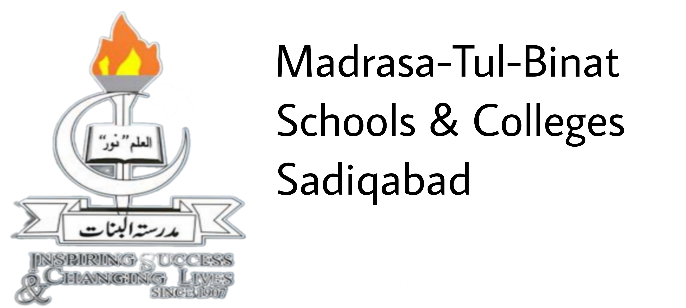
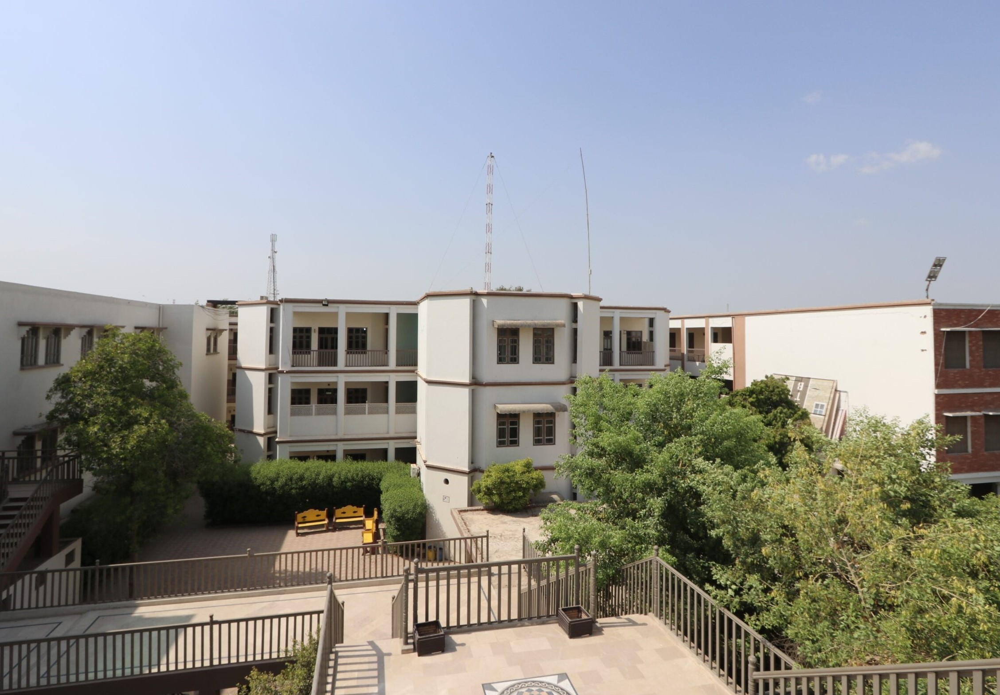
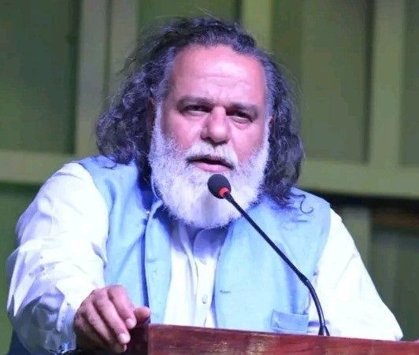

|  | |||||
| Home | Register | Vision | Gallery | Contact Us | |
|  | |||||
Director PrincipalMohammed Din JauharDirector Principal Mohammed Din Jauhar is a visionary leader at MTB Schools & Colleges Sadiqabad, where he oversees the institution's mission to inspire success and change lives. He emphasizes the critical role of modern education in today's world, believing it to be the key to progress and a better life. As the principal, Jauhar brings a robust set of skills to the table. Jauhar's leadership has been instrumental in shaping the growth of MTB Schools & Colleges Sadiqabad, which has become a benchmark for quality education in the area. His commitment to academic excellence and personal growth has earned him recognition, and he continues to inspire students, teachers, and staff alike to strive for excellence |
 | ||||
| © 2024 MTB Schools and Colleges Sadiqabad. All Rights Reserved. | |||||